AgenticSTS 是 Alaya Lab 一作、上海交通大学、上海创新研究院、南开大学和中国科学技术大学等机构合作完成的一篇长程 LLM agent 论文，论文入口为 arXiv:2607.02255。它不是单纯提出一个玩游戏 agent，而是把长程决策里的记忆接口本身做成可审计、可消融、可复现的实验对象。论文首页核验到项目与代码位于 https://github.com/AlayaLab/AgenticSTS，数据集位于 https://huggingface.co/datasets/ShandaAI/AgenticSTS-trajectories。我的阅读重点是：这篇工作怎样把“长上下文越堆越多”的直觉问题改写为“每一次未来决策到底允许看到哪些证据”的契约问题，以及它的实验证据在多大程度上支持这个契约。
长程 LLM agent 的记忆不是简单存文本，而是决定每次未来决策能看到什么的契约。把过去观察、工具调用和反思不断追加到 prompt，虽然让历史容易被访问，却会造成上下文持续膨胀、证据混杂、陈旧信息回流，并使单个记忆组件的贡献难以隔离；AgenticSTS 要解决的正是如何用有界、typed retrieval 的方式替代原始跨决策 transcript 追加。
[toc]
1. 背景和问题
这篇论文切入的不是“LLM 能不能玩 Slay the Spire 2”这个表层问题，而是长程 agent 在连续几百次决策里怎样携带历史经验。许多 ReAct、Reflexion 或实际工程 agent 会把观察、工具调用、自我反思和历史消息逐轮加回下一次调用。这样做有一个明显好处：历史材料还在上下文里，模型理论上可以直接读到。但是长程任务的难点恰恰在这里。运行越长，prompt 越像一个不断膨胀的杂物箱，新的局面、旧的错误、临时修正、已失效的计划和反思都会混在一起。模型每次决策看到的不是“为当前状态挑出的证据”，而是一条越来越长、越来越难归因的消息链。
AgenticSTS 的第一层贡献，是把这个现象改写成记忆契约问题。论文说，memory for a long-horizon LLM agent 本质上是未来每次 decision 被允许看到什么，而不是把文本存在哪里。这个表述很关键，因为它把研究对象从“能不能塞下更多 history”转到“每一类历史证据以什么类型、什么上限、什么可开关方式进入当前 prompt”。如果接口是原始 transcript 追加，那么成功或失败后很难回答是规则检索帮了忙、episode summary 帮了忙、skill library 帮了忙，还是只是更多 token 增加了某种偶然提示。本文的 bounded contract 试图把这些因素拆开。
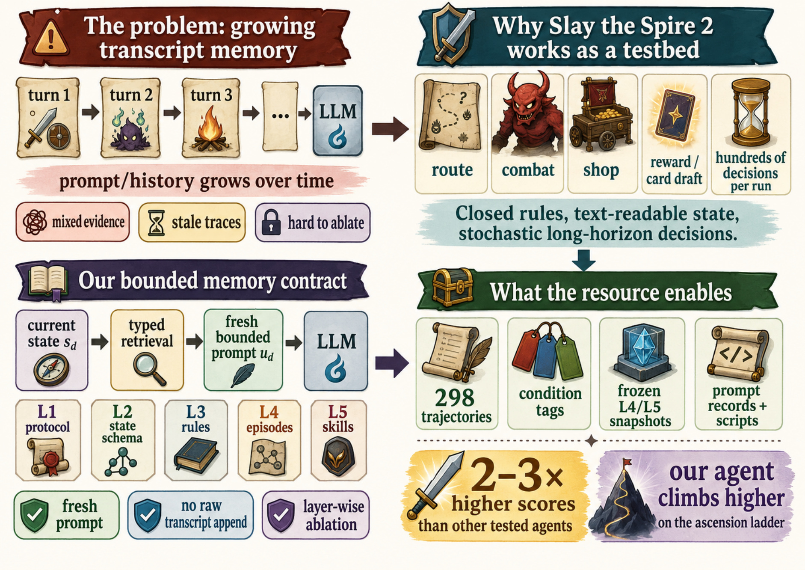
Figure 1 把论文的问题意识讲得很直观。左上角是 growing transcript memory：turn 1、turn 2、turn 3 一直向后追加到 LLM，下面标出 mixed evidence、stale traces 和 hard to ablate 三个后果。右上角解释为什么 Slay the Spire 2 适合做测试床：它有路线、战斗、商店、奖励卡牌选择和每局数百次决策，规则封闭且状态可以文本化，但随机性和长期规划又足够复杂。左下角是作者的替代契约：当前状态先进入 typed retrieval，再组装 fresh bounded prompt，而不是把 raw transcript 继续拼进去。右下角列出资源产物：298 条轨迹、condition tags、frozen L4/L5 snapshots、prompt records 和 scripts。这个图的价值在于，它没有把 AgenticSTS 画成一个“更强 agent”的单点宣传，而是把问题、环境、契约和可复现实验表面放在同一个对象里。对阅读者来说，后文每个数字都应该回到这里：论文真正声称的是 bounded typed memory contract 可审计、可消融、可复用，而不是已经证明所有有界记忆都优于所有 transcript agent。
选择 Slay the Spire 2 也不是偶然。论文强调这个环境有四个性质：规则空间可枚举且可被 LLM 读成结构化文本；单局时间长、决策多，典型运行约 80 分钟并包含约 67 次 strategic LLM calls；抽牌、奖励、事件、路线和敌人随机，无法只靠固定脚本复现；战斗又要求根据当前手牌、敌人意图、block、weak、strength、dexterity 等状态做计算。这让它比纯 QA 更接近真实 agent loop，又比开放世界视觉任务更容易把状态和记忆层变成可记录对象。作者还用公开基准和开发者公开数据说明任务没有饱和：公开 frontier LLM 配置在最低难度 A0 没有胜利，开发者报告的人类 A0 胜率约 16%。这组外部数字只用来校准任务难度，不是后文固定消融的 matched baseline。
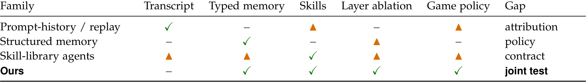
Table 1 说明了本文在相关工作中的位置。Prompt-history 或 replay 方案的中心轴是 transcript，可能有一点 skill 或 game policy，但 attribution 是缺口；structured memory 方案强调 typed memory，却不一定有技能层或游戏策略；skill-library agents 有技能，但不一定把 typed memory、layer ablation 和 game policy 合在一个测试面里。AgenticSTS 在表中被标为 typed memory、skills、layer ablation、game policy 同时成立，Gap 一栏写的是 joint test。这里的“joint”不是把所有东西堆成更复杂系统，而是把它们放进一个可拆的契约里。也就是说，论文希望读者不要只问“AgenticSTS 分数高不高”，而要问“如果关闭 L5、冻结 L4、替换 skill 来源、改变 prompt strictness，结果如何变化”。这也是我判断这篇论文价值的主线：它把 agent memory 从经验工程变成实验变量，但统计证据仍然需要谨慎。
这个背景与推荐系统、个性化大模型和长期用户记忆也有明显关系。推荐系统里的长期兴趣、短期会话、规则约束、业务策略、召回排序特征和实时上下文也常常被混进一个决策输入。只要系统需要连续决策，就会遇到“历史能见度”和“证据归因”之间的矛盾。AgenticSTS 给出的启发不是照搬游戏策略，而是把长期经验拆成层：固定协议、状态 schema、规则知识、episode summary、skill guide，各层有独立的写入规则和消融开关。这种拆分能让后续系统更清楚地回答一个上线问题：某个指标变化到底来自用户长期记忆、场景规则检索、策略指南，还是只是 prompt 包装变了。
2. 方法
2.1 有界决策契约：重新组装每次用户消息
AgenticSTS 的核心接口是 per-decision compositional context。对于第 d 次决策，系统不把历史对话直接追加给模型，而是根据当前状态从五类层中检索或填充材料，生成新的用户消息。论文把这个过程写成：
符号解释：$u_d$ 表示第 $d$ 次决策发送给 LLM 的用户消息，$s_d$ 表示当时的游戏状态，$\pi$ 是把各层内容排布成 prompt 的 compose operator，$L_1$ 到 $L_5$ 分别是固定协议、状态 schema、规则知识、episodic memory 和 skill library。这个公式背后的关键不是数学复杂，而是契约边界清楚：未来决策只能看到这些 typed slots 选出来的材料，原始跨决策 transcript 不会因为 run 变长而自然进入 prompt。
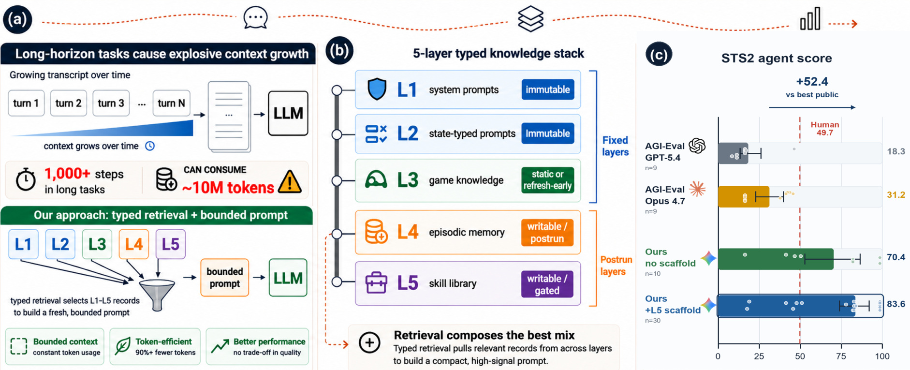
Figure 2 展示了这个契约的三个层面。左侧 panel 先对比 growing transcript 和 typed retrieval：长程任务会造成 explosive context growth，而 AgenticSTS 让 L1-L5 通过 typed selectors 进入 bounded prompt。中间 panel 把五层知识栈拆开：L1 system prompts 与 L2 state-typed prompts 是 immutable 的固定层；L3 game knowledge 可以静态或随 patch refresh；L4 episodic memory 和 L5 skill library 是 postrun layers，可以写入、冻结或 gating。右侧 panel 给出 score context，但作者在 caption 中明确说跨 agent 和外部比较只是 operational context，不是 matched ablations。这个图应放在方法章读，因为它解释的是信息进入模型的通道，而不是实验结果本身。它也提示一个实现细节：bounded 不等于少上下文，而是每个槽位有类型、上限和来源。
在有界条件下，prompt size 的表达也变了。论文给出的复杂度直觉是：
符号解释：$|\mathrm{sys}|$ 是固定系统消息长度，$s_{\mathrm{thread}}$ 是有界的 per-run strategic thread，$k_i$ 是第 $i$ 类检索槽取出的条目数上限，$s_i$ 是该类条目的大小上限。这个式子要表达的是，prompt 大小由固定前缀、有限 thread 和各层 top-k 检索项决定，不随历史决策数线性或二次增长。相对地，transcript interface 在第 $d$ 次决策会把之前许多状态和响应继续带入，最坏情况下每步成本会随 $d$ 和平均消息长度增长。因此 AgenticSTS 的方法重点不是压缩 token，而是让“哪些历史证据可见”变成一个可审计的函数。
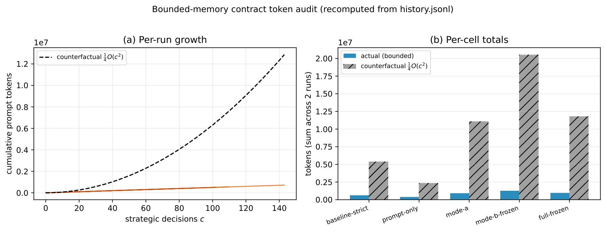
Figure 3 是方法章里最能支撑 bounded contract 的图。左侧 panel 画出十条 fixed-A0 runs 的 counterfactual transcript-appending token growth，即便用了四分之一的 naive 二次增长折扣，虚线仍然随着 strategic decisions 明显上扬；真实 bounded 线则保持较低斜率。右侧 panel 把两个 runs per cell 的 totals 做成柱状图，actual bounded tokens 与 counterfactual 相比差距非常大。这里不能把图当作 win-rate 证据，因为 caption 明确说明两条 run per cell 不用于胜率比较；它的证据角色是说明 context-growth mechanics。换句话说，Figure 3 证明的是如果采用 transcript 追加，长程 prompt 成本和注意力负担会按历史长度膨胀；如果采用有界 typed slots，每次决策的输入规模由槽位预算约束。这是后续实验能做 layer ablation 的先决条件。
2.2 五层 typed memory：L1 到 L5 的职责和可消融性
五层设计是本文最像系统工程的部分。L1 是 operator prompts，包含角色和协议模板；L2 是 state-typed prompts，根据 combat、deckbuilding、map、event、intermission 等决策类型提供合法 action format；L3 是 game knowledge，存放卡牌、遗物、敌人、事件和意图等可枚举规则；L4 是 episodic memory，存放 postrun summaries，例如 character、ascension、act、enemy class 等维度的 case-based recall；L5 是 skill library，存放被 trigger conditions 检索出来的战略指南。作者特别说明 raw Slay the Spire 2 logs 不作为 nearest-neighbor RAG，因为相似表面状态可能因牌序、遗物组合和路线历史而有完全不同的意义。
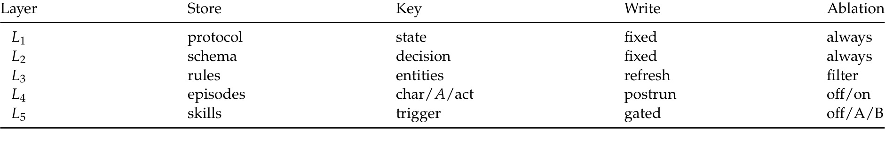
Table 6 是对五层契约最紧凑的定义。L1 的 store 是 protocol，key 是 state，写入规则 fixed，ablation 中 always 存在；L2 的 store 是 schema，key 是 decision，同样 fixed；L3 的 store 是 rules，key 是 entities，可以 refresh，并在消融中做 filter；L4 的 store 是 episodes，key 是 char、A、act，写入发生在 postrun，消融可以 off/on；L5 的 store 是 skills，key 是 trigger，写入是 gated，消融可以 off、A 或 B。这个表比正文自然语言更能说明“typed”是什么意思：每层不是同一种 memory 的不同容量，而是有不同 key、write rule 和 ablation state 的接口。对工程系统来说，这意味着每层都可以被日志记录、冻结、替换和单独回放；对研究来说，这让后文的 fixed-A0 matrix 有可解释的变量。
L4 和 L5 的差别尤其重要。L4 更像 episode summary，保留某类 run 后的经验，但在 fixed-A0 headline matrix 中，mode-a 和 full-frozen 都是 6/10，作者因此没有把 L4 说成 A0 主要收益来源。L5 更像可触发的 strategy guide：它用 trigger 选择 prose policy，为下一次决策提供战术或战略建议。L5 的写入还经过四级 gate，包括 cosine、Jaccard、LLM judge 和可选 reap，大多数候选会被拒绝或合并。这里的风险是 skill library 很容易把一次经验写成过拟合规则，所以作者把 write gate 和 frozen snapshot 放进实验协议，而不是让技能在评估时自由漂移。
2.3 路由、战斗截断和 skill discovery
AgenticSTS 还做了一个常被忽略的实现选择：不是所有游戏动作都用同一个昂贵模型调用。dispatcher 把决策路由到 fast、strategic、analysis 和 evolution 四个 tier。trivial combat plans 可以走 fast tier，普通决策走 strategic tier，postrun memory extraction 走 analysis tier，skill distillation 走 evolution tier。四个静态 system prompts 可以缓存，per-run 状态放在 user message 中。战斗是唯一保留 local conversation object 的决策类型，但它每回合最多发 combat_start、ok 和 latest user state 三条消息，早先回合通过 typed state 总结，而不是继续追加整段对话。
这个路由和截断机制不能简单看成加速技巧。它和 bounded memory contract 是连在一起的：如果一次战略调用能覆盖多个机械动作，且战斗历史通过状态结构而不是 transcript 追加进入 prompt，那么 agent 的“行动频率”和“LLM 调用频率”就被拆开。论文报告典型 run 中大约 500 个额外 in-game decisions 被机械处理或路由到 fast tier，strategic LLM calls 的中位数约 67。这样做会让与公开 transcript agents 的 operational comparison 不再是纯粹 memory-contract 对比，作者也承认这一点；但它说明真实 agent package 往往由 memory interface、routing、state schema 和 batching 共同决定。
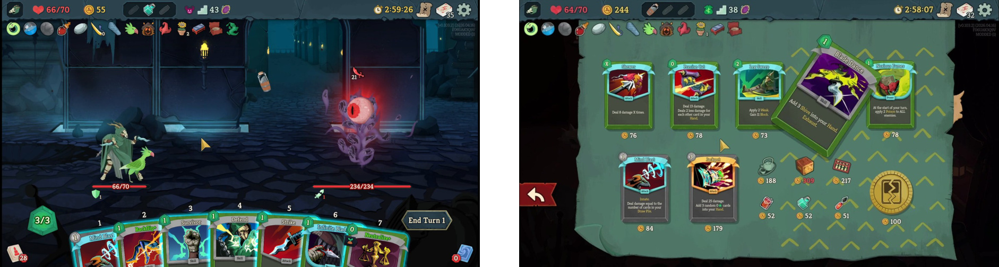
Figure 9 来自附录 prompt exhibits，左边是 combat planning 状态，右边是 shop planning 状态。这个图的作用不是展示模型输出，而是让读者看到 typed prompt 面对的原始状态有多具体：战斗中有角色血量、敌人意图、手牌、能量、药水和当前回合状态；商店中有金币、卡牌和遗物候选、价格、当前 deck 与 relics。正文附录随后打印了大量 L1-L5 prompt 片段，例如 retrieved skills、deck insights、card-specific insights、game knowledge、shop state、items for sale 等。只看主文的公式，可能会误以为 typed retrieval 是抽象 schema；Figure 9 说明它实际上要承载非常细的状态输入。对复现者来说，这也意味着难点不在写一个检索器，而在保证每类状态的 action format、规则描述和技能触发条件都可靠。
2.4 fixed-A0 五条件矩阵如何把方法变成实验面
方法最终要落到可消融的实验面。论文的 fixed-A0 study 不是完整 factorial grid，而是五个条件的 decomposition。baseline-strict 用 baseline prompt，无 memory、无 skills、无 strategic thread 和无 combat-conversation wrapper，并使用 strict knowledge/hint filter。prompt-only 保留完整 prompt 与 conversation helpers，但关闭 L4 和 L5。mode-a 加入人写的 L5 seed bodies。mode-b-frozen 把 L5 来源换成 stub-template-filled bodies。full-frozen 在 Mode A 上加 frozen L4 episodic store。所有 fixed-A0 cells 都关闭 postrun 和 evolution writes，store 固定在同一个 SHA。
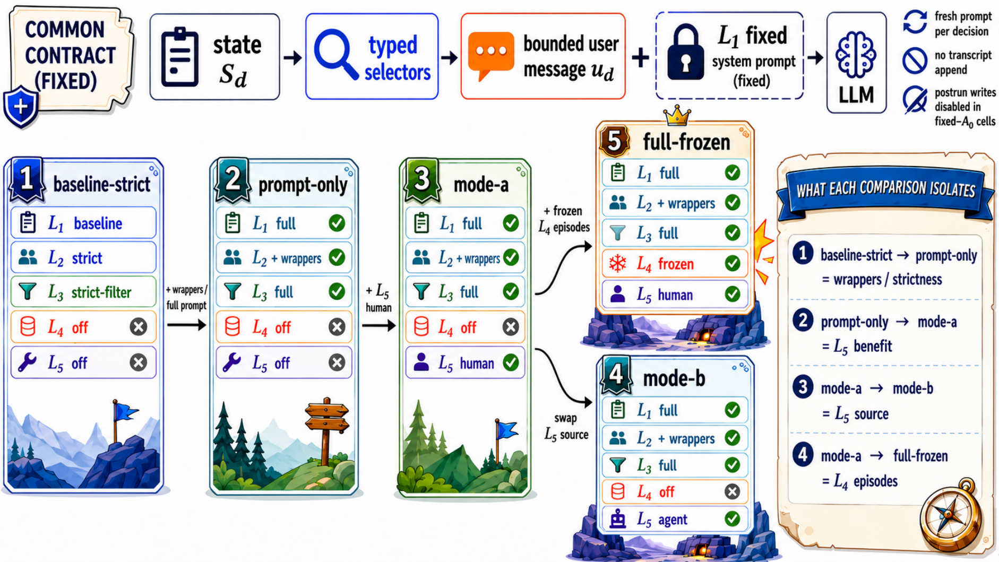
Figure 4 是理解后文数字的路线图。上方画出共同契约：state 进入 typed selectors，再生成 bounded user message，与固定系统 prompt 一起传给 LLM，且每次决策都是 fresh prompt、no transcript appended、fixed-A0 cells 禁止 postrun writes。下方五张卡片对应五个 cell，右侧说明相邻比较分别大致隔离 wrappers/strictness、L5 benefit、L5 source 和 L4 episodes。这里需要特别谨慎：作者说 baseline-strict 到 prompt-only 改的是 prompt package 和 strictness group，不是单一机制；mode-a 到 full-frozen 才是在同一 seed skill 设置上加 L4。这个图也说明为什么论文不断使用 directional rather than statistically decisive 这类表述。它提供的是一个可复用的 ablation surface，而不是一次性证明所有层的精确因果大小。
3. 实验结果
3.1 fixed-A0 主消融：L5 是最大观察差异，但不是统计定论
实验结果首先看 fixed-A0 balanced subset。作者取每个 condition 按开始时间排序的前十个 completed games，共五十局，作为 headline comparison。run 的 derived score 定义为：
符号解释：$s$ 是分析分数；如果胜利则记为 100；否则使用到达的 floor 加上 boss clear 数的加权项；$\mathrm{bosses}$ 对非胜局按到达楼层映射为 0、1 或 2，胜局为 3。这个分数用于连续效果对比，但 win-rate claims 不依赖这个分数尺度。作者还用 ±10% 扰动检查 score-based qualitative comparisons，避免把一个人为系数当成核心结论。
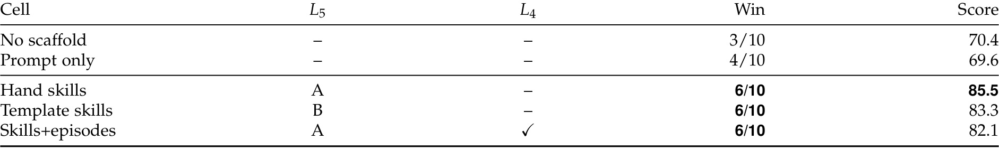
Table 2 是本文最重要的结果表。No scaffold 是 3/10，score 70.4；Prompt only 是 4/10，score 69.6；Hand skills、Template skills 和 Skills+episodes 都是 6/10，分数分别为 85.5、83.3 和 82.1。最直观的读法是：两个没有 L5 的 cell 在胜场上较低，三个有 L5 的 cell 都达到 6/10。论文进一步给出 Wilson 95% confidence intervals，并反复强调 3/10、4/10、6/10 在 N=10 下区间很宽。这个表支持“triggered skills 是 fixed-A0 matrix 中最大观察差异”的说法，但不支持“技能层已经被统计显著证明优于无技能”的强说法。对我来说，最有价值的是表中 Mode B 也达到 6/10：即便 L5 的 prose 来源换成模板填充，它仍然在这个 interface 中提供相似点估计，说明 skill layer 的存在可能比特定人写措辞更重要，但样本量仍不足以做细排名。
作者把 layer-attributable difference 写成：
符号解释：$\Delta L_\ell$ 表示某一层开启与关闭时的胜率点估计差，$\widehat{p}_{\mathrm{with}\text{-}\ell}$ 是带该层的胜率估计，$\widehat{p}_{\mathrm{without}\text{-}\ell}$ 是不带该层的胜率估计，$\ell$ 表示被比较的层或机制。根据 Table 2，prompt strictness/wrappers 的差异约为 +1/10，L5 在相同 prompt setup 下约为 +2/10。Fisher exact test 对 3/10 与 6/10 得到 p≈0.37；把 scaffolded 与 unscaffolded 粗略合并为 18/30 与 7/20，p≈0.148，Wilson intervals 仍然重叠。因此，论文最稳妥的结论是 L5 具有方向性收益，而不是精确统计排序。
3.2 ladder、backbone 与迁移：证据分流而不是混池
固定 A0 只回答一个难度下的可靠性问题。作者又报告 auto-mode ladder：胜利后尝试下一个 Ascension，失败后重试当前 Ascension。这个 stream 测的是爬升端点，不和 fixed-A0 的 balanced denominator 混池。
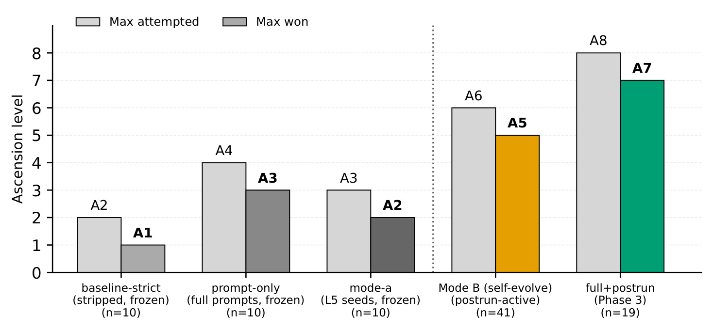
Figure 5 显示 baseline-strict 的 max attempted 是 A2、max won 是 A1；prompt-only 到 A4/A3；mode-a 到 A3/A2；Mode B postrun-active 到 A6/A5；full+postrun 到 A8/A7。这个图容易被误读为“postrun memory 一定更强”，但作者只把它作为 endpoint evidence。原因在于这些 streams 的 N 不同，Mode B 是 41，full+postrun 是 19，而且 postrun writes 允许 stores 在 run 之间更新，和 fixed-A0 的 frozen design 不是同一个估计问题。它的价值是补充一个现象：当 L4/L5 可以在 run 后更新时，agent 能尝试更高难度；但它不能替代 fixed-A0 matrix，也不能说明 A8 endpoint 已经有稳定胜率。
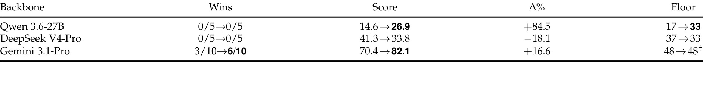
Table 3 展示同一个 Gemini-trained L4+L5 stack 迁移到 Qwen、DeepSeek 和 Gemini 的结果。Qwen 从 0/5 到 0/5，胜场没有变，但 score 从 14.6 到 26.9，标成 +84.5%，floor 从 17 到 33；DeepSeek 同样 0/5 到 0/5，但 score 从 41.3 降到 33.8，floor 从 37 到 33；Gemini 则从 3/10 到 6/10，score 从 70.4 到 82.1。这个表的重要性在于它给 skill memory 的迁移泼了冷水：同一套 frozen skills 不是模型无关资产。对于 Qwen，skills 可能改善了走得更远的能力；对于 DeepSeek，它反而拖低分数；对于 Gemini，才是训练来源一致的正向结果。工程上这提醒我们，策略记忆不能只按文本质量评估，还要按目标 backbone 的行动偏好、解码风格和错误模式重新验证。
3.3 与公开 accumulating-context agents 的 operational comparison
论文第 7 节加入 STS2MCP 和 CharTyr 两个公开 Slay the Spire 2 agent 的比较。作者很谨慎地说，这不是 matched ablation of the memory contract。竞争系统的 game patch、routing、thinking effort、decision batching、prompt cadence 和接口错误都不同，所以它只能说明公开系统状态，而不能单独归因到 boundedness。
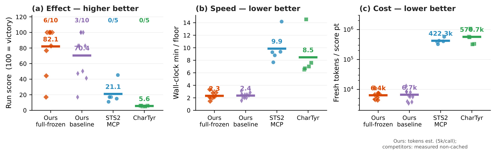
Figure 6 三个 panel 分别看 effect、speed 和 cost。Effect panel 中 AgenticSTS full-frozen 是 6/10，mean score 82.1；baseline-strict 是 3/10，mean score 70.4；STS2MCP 与 CharTyr 都是 0/5，mean score 分别约 21.1 和 5.6。Speed panel 中 AgenticSTS 每到一层约 2.3 到 2.4 分钟，公开 agents 为 9.9 和 8.5 分钟。Cost panel 用 fresh tokens per score point 的 log scale，AgenticSTS 约 6.4k 到 6.7k，STS2MCP 和 CharTyr 达到 422.3k 和 570.7k。图中的差距很大，但解释时必须保留两个边界：第一，这些公开 agents 是作者忠实运行的 shipped systems，不是同代码库的 accumulating-context cell；第二，AgenticSTS 自身还用了 decision batching 和 fast-tier routing，成本优势并不全来自 memory contract。不过，从 operational package 角度看，这张图说明了 transcript-accumulating 实践在长程游戏里同时面临效果、时延和 token 成本压力。
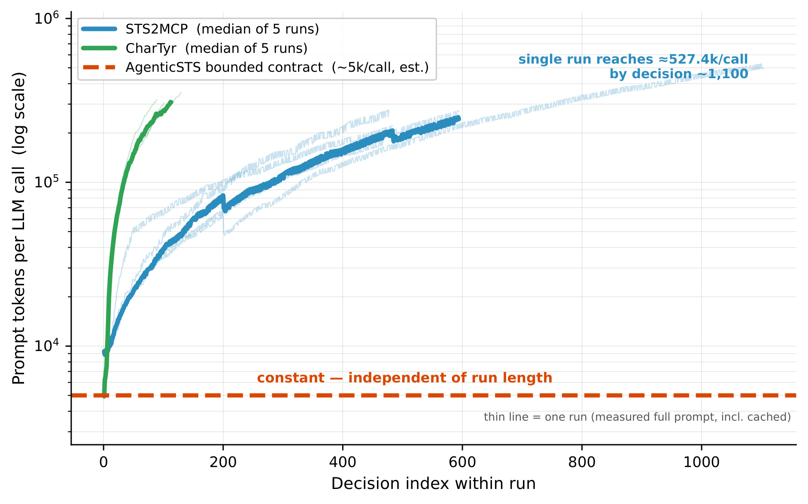
Figure 7 进一步解释 Figure 6 的成本来源。STS2MCP 和 CharTyr 的 per-call prompt size 随决策 index 在 log scale 上明显增长，最坏的 STS2MCP 单 run 在约 1100 次 decision 时达到约 527.4k tokens per call。橙色虚线代表 AgenticSTS bounded contract 的 strategic user-message median，约 5k 且与 run length 无关。这里的“constant”不是说每次输入内容完全一样，而是说每次决策只从槽位预算内重组当前相关材料，系统不会因为过去发生了更多 turn 就自动带上更多 transcript。这个机制层面的图，比 Figure 6 的总成本更能支撑论文的核心直觉：长程 agent 的成本问题和注意力问题是同一个接口问题的两面。
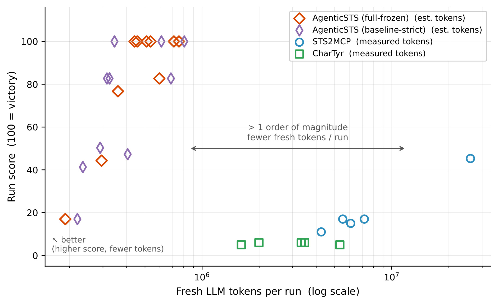
Figure 8 把 run score 和 fresh LLM tokens per run 放在同一张 log-scale 图里。空心菱形是 AgenticSTS 的 full-frozen 和 baseline-strict，圆形和方形是 STS2MCP 与 CharTyr。AgenticSTS 的点集中在左上区域，意味着分数更高且 fresh tokens 更少；公开 transcript agents 在右下或右侧区域，成本高而分数低。图中箭头标出超过一个数量级的 token 空带。这个图最适合用来总结“bounded typed retrieval package 的工程吸引力”，但仍然不能过度外推到所有任务。作者自己也说，下一步最干净的实验是把同代码库的 accumulating-context variant 作为一行加进相同 matrix，用相同 stores、condition tags、scoring scripts 和 prompt records 来隔离 contract variable。
3.4 prompt records 和可复现资源
除了分数，论文还释放 298 条 completed trajectories、condition tags、frozen L4/L5 snapshots、decision-time prompt records 和 Wilson/bootstrap analysis scripts。这个 archive 对读者很重要，因为它允许重新聚合 fixed-A0 cells，或按 condition tag 切片分析不同 streams。论文的强项在于把“资源”作为结果的一部分，而不是只给一个排行榜数字。
Figure 9 的 prompt exhibits 说明这种资源不是空泛日志。附录中 combat decision 的 prompt 包含 L1 role、output schema、L3 combat rules、L2 player/enemy/relic counters/potions/piles/hand 等；shop decision 又包含 L5 deck philosophy、two-phase framework、retrieved skills、L4 deck insights、card insights、L3 card mechanics、L2 shop state、current deck、relics、items for sale 和 L1 task schema。这样的记录让后来者可以检查某次决策到底看到了哪些证据、哪个 layer 提供了什么内容，以及错误是否来自 schema、规则、episode 还是 skill。对于研究复现，这比只公开最终胜负更有用；对于工程系统，这也是定位长期记忆污染、过拟合 skill、过期规则或 action format 错误的基础。
4. 总结
4.1 我的判断
我认为 AgenticSTS 的主要价值不是“做出了一个会玩 Slay the Spire 2 的 agent”，而是提出并实装了一个把长程记忆接口变成实验面的范式。它的贡献有三层：第一，把每次决策允许看到什么定义为 contract；第二，把 contract 拆成 L1-L5 typed layers，并给每层写入、冻结、过滤和消融规则；第三，把轨迹、prompt records、memory snapshots 和分析脚本一起发布，让后续研究能复算或加新条件。这个设计对所有需要长期记忆的 agent 系统都有参考价值，尤其是那些当前还把历史、规则和策略混成一个长 prompt 的系统。
4.2 局限和风险
这篇论文的边界也要看清。第一，fixed-A0 headline 只有每 cell 十局，3/10 到 6/10 的差异是方向性结果，不是统计显著结论。第二，cross-backbone transfer 表明 skill memory 可能依赖模型，不能假设一套策略文本跨 backbone 通用。第三，与公开 accumulating-context agents 的比较是 operational comparison，不是同代码库 matched ablation，routing、batching、patch 和接口差异都会影响结果。第四，测试床集中在 Slay the Spire 2 的 Silent 单角色和文本可枚举状态，视觉、连续控制、多 agent 协作、在线人类纠偏和跨游戏迁移都没有覆盖。第五，L5 skill library 虽然有 gate，但仍可能把特定 run 的经验固化成过窄策略，需要更多失败案例和反事实分析来确认。
4.3 工程启发和后续跟进
工程上我会把这篇论文当作 memory interface checklist，而不是直接复用游戏代码。后续可以跟三件事。第一，在同一代码库中补一个 accumulating-context row，真正隔离 bounded contract 本身的因果贡献；这也是作者明确留下的 follow-up。第二，把 L4 episode 和 L5 skill 的写入 gate 做更细的审计，例如记录每条 skill 的触发频率、负收益案例、被合并或拒绝的候选，以及跨 backbone 的失败模式。第三，把这个五层契约迁移到非游戏的闭规则 agent loop，例如推荐策略模拟、广告投放策略回放、工具调用工作流或企业任务执行，看 typed retrieval 是否同样能降低历史污染并提升可归因性。对我来说，这篇论文最值得保留的一句话是：长程 agent 的记忆不是越多越好，而是每次决策应该看到哪些证据、以什么类型和边界看到它们。